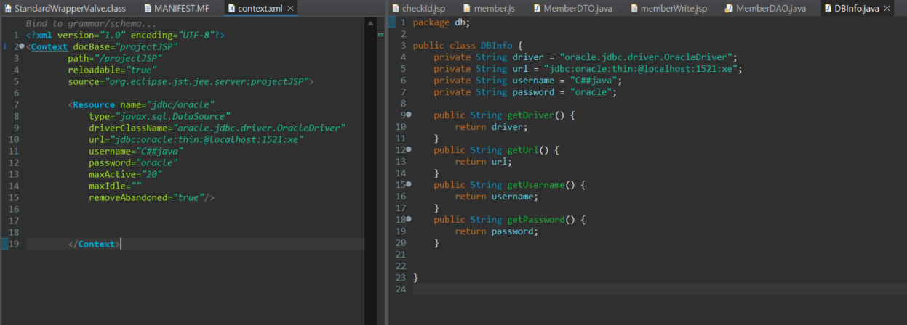
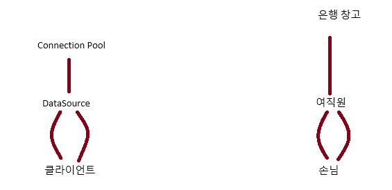
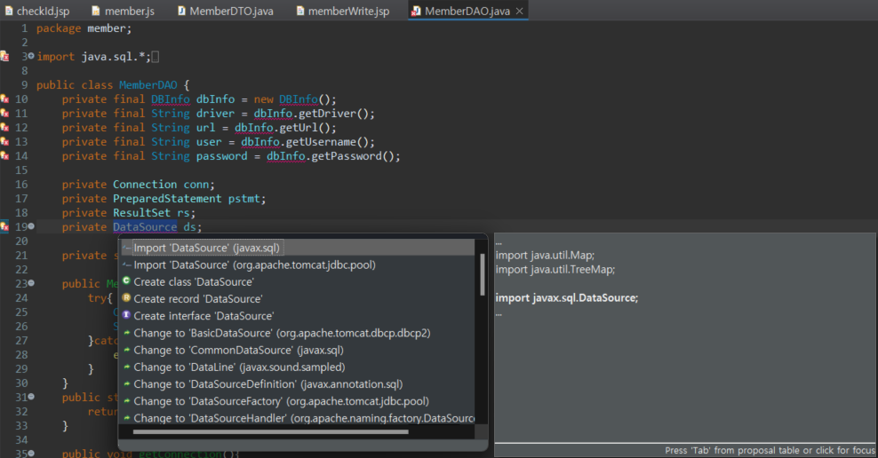

- 서버에 미리 connection을 쫙 만들어 놓는 것
- 미리 김밥을 만들어놔야 출근시간에 바로 줌 → 출근 시간에만 적용시킴
- DB와 연결된 커넥션을
미리 만들어서Pool 속에 저장해두고 있다가, 필요할 때 커넥션을 풀에서 가져다가 쓰고 다시풀에 반환(close)하는 기법 - Connection의 내용이 바뀌면 서버만 수정해주면 된다
- 풀속에 미리 커넥션이 생성 되어있기 때문에 커넥션을 생성하는데 드는
연결시간이 소비되지 않는다 - 커넥션을 계속해서 재사용하기 때문에 생성되는 커넥션 수는 많지 않다
- 오라클 주소, 드라이버, ID, PW를 서버에 숨겨 놓음으로 보안에 좋다
- 서버의 Connection 들을 얻어오려면 javax.sql.DataSource 를 이용
server.xml에서 <Context></Context>에 추가해야하는데 따로 context.xml를 만들어서 사용해보자 ⇒ META-INF 밑에 만들면 됨
필요한 라이브러리
commons-collections-3.2.1.jar commons-dbcp-1.4.jar commons-pool-1.6.jar
용어 정리
maxActive - 커넥션 풀이 제공할 최대 커넥션 개수 maxIdle - 사용되지 않고 풀에 저장될 수 있는 최대 커넥션의 개수, 음수일 경우 제한을 두지 않음 maxWait - 커넥션 풀을 대기하는 대기시간, 음수일 경우 제한을 두지 않음

- yml 처럼 설정을 한다.

- type → javax.sql.DataSource ⇒ 여직원

public MemberDAO() {
Context context;
try{
context = new InitialContext();
// ds = (DataSource)context.lookup("jdbc/oracle");
ds = (DataSource)context.lookup("java:comp/env/jdbc/oracle"); // Tomcat인 경우 -> 앞에 접두사 java:comp/env/ 필요
}catch(NamingException e){
e.printStackTrace();
}
}- context .lookup을 통해 드라이버 로딩 진행
두 closeConnection()의 차이점
| 특징 | JdbcDAO의 closeConnection() | MemberDAO의 closeConnection() |
| 커넥션 생성 방식 | DriverManager를 통해 매번 새로운 커넥션 생성 | DataSource를 통해 커넥션 풀에서 커넥션 가져오기 |
close()의 역할 | 데이터베이스와의 실제 커넥션 종료 | 커넥션 풀에 커넥션 반환 |
| 리소스 관리 | 커넥션을 닫지 않으면 리소스 누수 발생 가능 | 커넥션을 닫지 않으면 커넥션 풀이 고갈될 수 있음 |
| 성능 | 매번 커넥션 생성 및 종료로 인한 오버헤드 발생 가능 | 커넥션 재사용으로 인한 성능 향상 |
| 사용 시 주의사항 | 반드시 closeConnection()을 호출하여 리소스를 해제해야 함 | 반드시 closeConnection()을 호출하여 커넥션을 풀에 반환해야 함 |